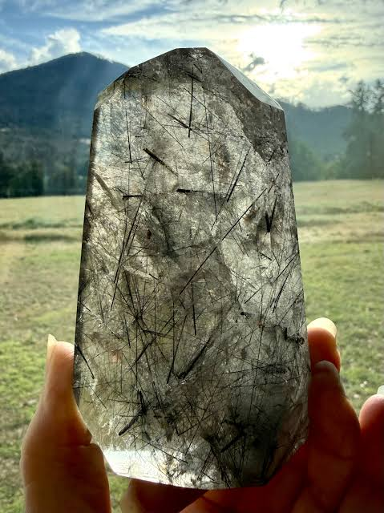

Soulweaver(10 left)
This crystal is made to help guide your soulmate into your life.
It follows the deepest bond your soul can make, whether that person is someone new or someone from your past.
It does not force love or control anyone's choices.
Instead, it helps remove emotional blocks and opens the way for honest, natural connections to grow.
If your soulmate is a stranger, this crystal is believed to increase the chances of meeting them through unexpected moments.
If it is someone you already know, it may help both of you see each other with fresh eyes.
Many people use this crystal during meditation or while setting their intentions.
It serves as a daily reminder to stay open, patient, and ready for the love that truly belongs with you.
Keep this crystal close and trust the journey ahead.
Whether your soulmate is an old love or someone you have never met, this enchantment is meant to help guide your paths together when the time is right.

Guardian's Shield(6 left)
Black Tourmaline has long been linked with protection and grounding.
This enchanted crystal is made to help shield you from unwanted negative energy while encouraging a calm, steady mind during difficult times.
It does not block every challenge or remove every problem.
Instead, it is believed to strengthen your inner resilience, making it easier to stay focused and avoid being overwhelmed by fear or stress.
Many people carry this crystal when they enter crowded places or difficult situations.
It is said to create a sense of balance, helping you let go of heavy emotions that are not truly yours.
Use this crystal during meditation, at work, or anywhere you want to feel more centered.
It serves as a reminder to stand firm, protect your peace, and move through life with confidence.
Keep Black Tourmaline close as a symbol of strength and protection.
This enchantment is meant to help you stay grounded, clear-minded, and resilient no matter what challenges come your way.
